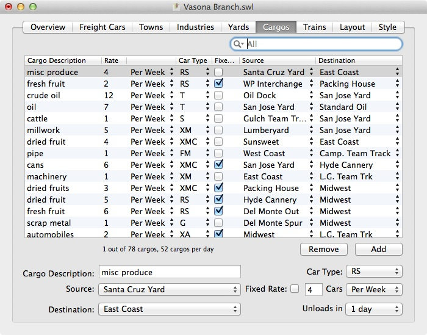

 The Cargos tab lets you name the kind of loads that your freight cars will carry around the layout. Cargos are important to SwitchList both to help determine where freight cars should realistically travel to, and so that your operators can know what their freight cars might be carrying.
To add a new cargo, press the "Add" button and provide the named fields. To remove an existing cargo, select it and press the "Remove" button.
Each cargo is associated with six pieces of information: a description that will be diplayed in SwitchList and in the documents it produces, the industry that is the source of the cargo, the industry that is the destination of the cargo, whether the cargo arrives at a fixed or random rate ("fixed rate" checkbox), what freight car type can carry the cargo, and the number of freight cars per day, week, or month that should be generated. Any of these settings can be changed at any time.
Cargo sources and destinations can be any industry listed in the Industries tab. Industries can be real industries on real sidings on the layout, or can be imaginary industries somewhere off the layout. A car destined for an industry located either in a town listed as "staging" or "offline" will be assumed to reach its destination when the car reaches any staging yard.
Each cargo may only be carried by one type of freight car. If you want the same cargo to be carried by multiple cars ("both 40' and 50' boxcars"), consider creating separate cargos for each car type.
The rate setting decides how often the cargo should appear on the layout. Cargo rates can be set in terms of the number of cars per day, per week, or per month that should be carrying that cargo. Car rates can be exact ("fixed rate" cargos) or can represent averages. Fixed rate cargos will be generated exactly as many times as you specify. If you say that a given cargo should appear 28 times a week, then four cars a day (28/7) will carry that load (as long as enough empty cars exist.) Non-fixed-rate cargos are allowed to be more random; they'll generally appear at the rate you suggest, but more cars or less may appear depending on the luck of the draw. A non-fixed-rate cargo set for two cars per day might find one car carrying the cargo in an operating session, and three in the next session. That randomness ensures that no two operating sessions should appear the same. If SwitchList chooses a particular cargo but none of the freight cars needed are available, then the cargo is ignored.
Specifically, SwitchList assigns cargos by first sweeping through the list of fixed rate cargos and putting the appropriate number of each into the collection of today's cargos. Next, SwitchList determines the total number of non-fixed-rate cargos to generated by calculating the expected number of non-fixed-rate cargos that should appear per month. If you have three non-fixed-rate cargos that should each appear at the rate of one car ad day, then three cargos will be selected. Next, SwitchList randomly selects that many cargos from the list of non-fixed-rate cargos, weighting the choices by the frequency the cargo should appear. A cargo that should appear 14 times a week will be selected twice as often as a cargo appearing seven times a week. This selection is random, and cargos are not removed from the list as selected, so the actual number of cars getting that cargo each day might be larger or smaller than what you specify.
Once the cargos have been chosen, SwitchList attempts to find freight cars to hold each car, starting with the fixed-rate cargos, and then the non-fixed-rate cargos. If no unassigned cars of the correct type are available, then the cargo will not be assigned.
In Depth: Hints on Choosing Cargos
{kind=link}